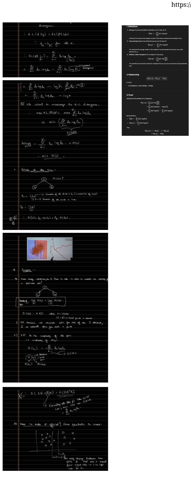

Entropy from KL Divergence
Part 2 used entropy as a given. This part shows where it comes from. The argument is short and pretty: the most impure node is the one whose class distribution is uniform, so a good split should push each child's distribution as far from uniform as possible. Measuring that distance with the KL divergence produces entropy automatically.
The Worst Node Is Uniform
The worst possible leaf is one where all classes are equally likely, because every prediction is a coin flip. Write the uniform distribution over $K$ classes as $q$, with
$$q_1 = q_2 = \dots = q_K = \frac{1}{K}.$$A pure node, by contrast, is one whose distribution $p$ concentrates on a single class. So purity is exactly "how far $p$ is from $q$", and a natural way to measure that distance between distributions is the KL divergence:
$$D_{\mathrm{KL}}(p \,\|\, q) = \sum_{k=1}^{K} p_k \log\frac{p_k}{q_k}.$$Maximizing the Distance Gives Entropy
Substitute the uniform $q_k = 1/K$ and simplify:
$$D_{\mathrm{KL}}(p \,\|\, q) = \sum_k p_k \log\frac{p_k}{1/K} = \sum_k p_k\big(\log p_k + \log K\big) = \underbrace{\log K}_{\text{constant}} + \sum_k p_k \log p_k.$$Recognize the last term: $\sum_k p_k \log p_k = -H(p)$, the negative entropy. So
$$D_{\mathrm{KL}}(p \,\|\, q) = \log K - H(p).$$To make a node pure, maximize this distance. Since $\log K$ is constant across splits, maximizing the KL divergence is the same as minimizing the entropy:
$$\max_{p}\; D_{\mathrm{KL}}(p\,\|\,q) \;\Longleftrightarrow\; \max_{p}\sum_k p_k\log p_k \;\Longleftrightarrow\; \min_{p}\Big(\!-\!\sum_k p_k \log p_k\Big) = \min_p H(p).$$That is the punchline: entropy is not an arbitrary choice. Splitting to minimize entropy is splitting to move each child as far from the maximally-confused uniform distribution as possible. The animation traces $H$ and the Gini index as the two-class proportion $p$ moves from balanced to pure, alongside the KL distance from uniform.
▶ Impurity Curves and Distance from Uniform
For two classes with proportion $p$: entropy $H(p)$ and Gini $2p(1-p)$ both peak at $p=\tfrac12$ (uniform, most impure) and vanish at the pure ends. The KL distance from uniform, $1-H(p)$, does the opposite.

Entropy, Cross-Entropy, and KL
Three quantities recur whenever distributions are compared, and they fit together cleanly:
- Entropy $H(p) = -\sum_x p(x)\log p(x)$, the average surprise of samples from $p$.
- Cross-entropy $H(p, q) = -\sum_x p(x)\log q(x)$, the average bits to encode samples from $p$ using a code optimized for $q$.
- KL divergence $D_{\mathrm{KL}}(p\,\|\,q) = \sum_x p(x)\log\frac{p(x)}{q(x)}$, the extra bits paid for using $q$ instead of the true $p$.
The relationship is a one-line identity, KL divergence equals cross-entropy minus entropy:
$$\boxed{\,D_{\mathrm{KL}}(p\,\|\,q) = H(p, q) - H(p)\,}$$The proof is just splitting the logarithm:
$$D_{\mathrm{KL}}(p\,\|\,q) = \sum_x p(x)\log\frac{p(x)}{q(x)} = \sum_x p(x)\log p(x) - \sum_x p(x)\log q(x) = -H(p) + H(p,q).$$Entropy of a Tree Node
When a node $S$ splits into a left child $S_L$ and a right child $S_R$, the impurity after the split is the size-weighted average of the children's entropies. With $p_L = |S_L| / |S|$ the fraction of points going left,
$$H(S) = p_L\, H(S_L) + p_R\, H(S_R).$$This is precisely the quantity that information gain (Part 2) subtracts from the parent's entropy. Minimizing it, over all candidate splits, is the greedy step ID3 takes at every node.
Part 4 turns to the practical side: how to make this split search fast (an $O(n\log n)$ sweep instead of $O(n^2)$), how regression trees replace entropy with squared error, and how pruning controls the variance that Part 1 warned about.